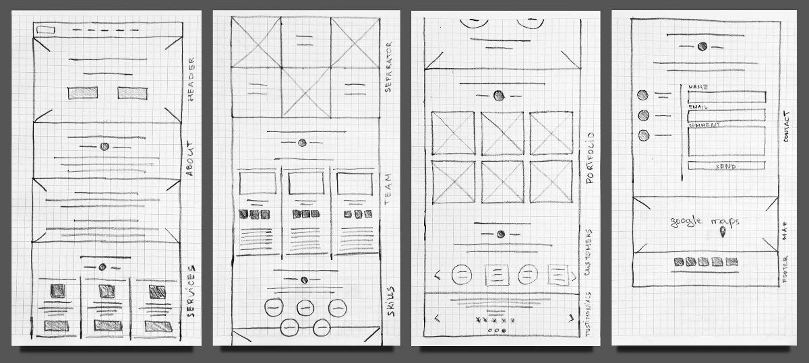
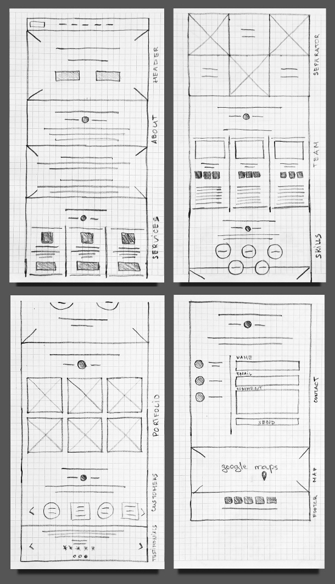
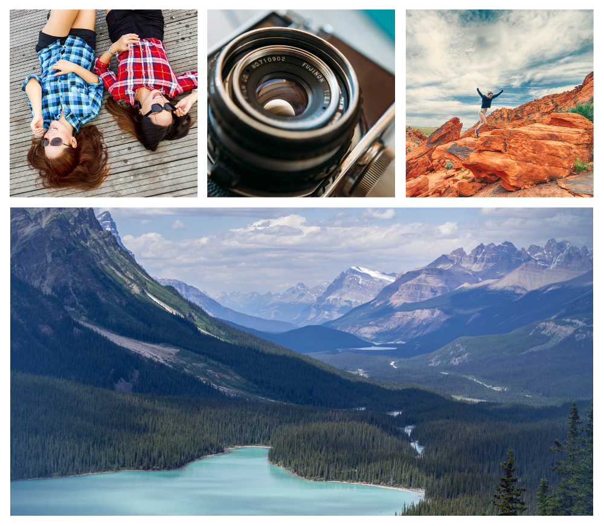
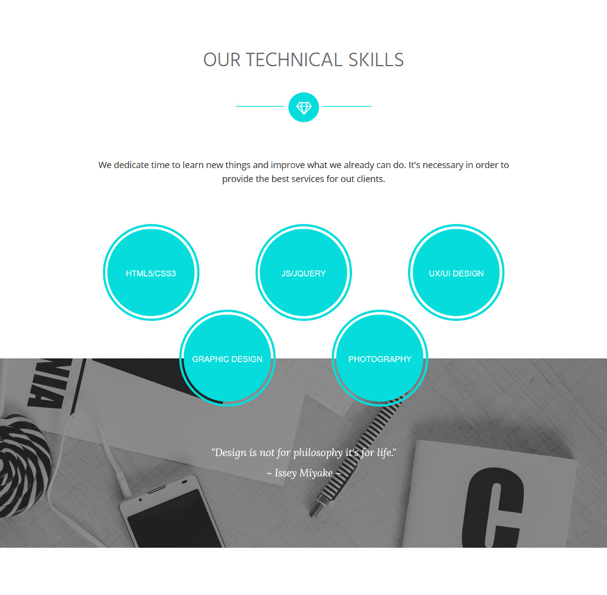
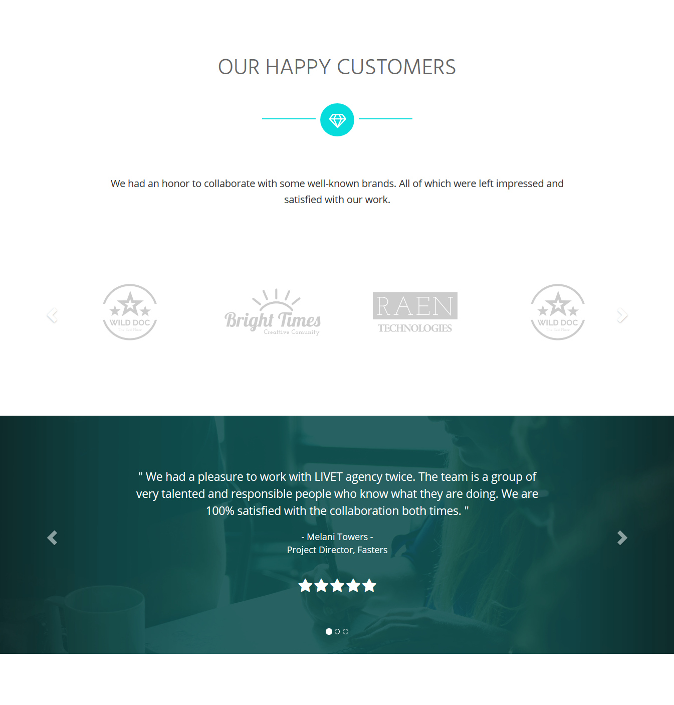

Concept
The idea was to create a website design for a creative developers community. This website was to be aimed at a young spirited team with positive energy.
My Role
I needed to design and develop a website design to show my potential to clients and their work and provide website visitors with a convenient way to contact the team.
In addition it was necessary to write a detailed documentation for the web design, so that the customization of it was an enjoyable experience.
Process
I started with a research on what a creative website design requires and prepared the list of necessary pages for the website. However, after some brainstorming I came to a conclusion that a single page design would suit such an company best.
I made a list of sections which were crucial for the website.
- Navigation
- Header
- About
- Services
- Team
- Portfolio
- Contact
- Footer
Next I sketched a layout to think through all necesary elements for the page and have a visual reference later on. In other scenario it would be a wireframe of the website I would show to a client, but this time it was only for my own use.
 Before moving on to designing the page I needed to think of a name for the website and check on its availability. I named the website Livet, which means "life". It was a perfect name for the type of website I wanted to create. I meant it to be lively, bright and fresh. Livet fitted it well without questions.
After that nothing was holding me back from working on design.
Design
As the first step I made a colour pallet which would consist of: turquoise, two shades of grey, midnight green and white.
I chose turquoise as the primary colour for it is associated with energy, joy, creativity and loyalty. This colour would match the team behind Livet perfectly.
Fonts
For the section headers I planned to use uppercase letters therefore I went for Hind sans-serif font which looked clean and uncluttered.
Looking for a font for the website I stopped on Open Sans sans-serif font. It is described as neutral yet friendly as well as being optimized for print, web and mobile devices and having excellent legibility characteristics.
Assets
Looking for suitable assets I was led by the same mood selecting only images which expressed creativity, positive energy and had some shades of blue, yellow or torquoise in them. I wanted them to be warm and welcoming.
UI/UX
Enjoyable user experience was my priority when working on the web design. I wanted to make sure the website is easy to navigate, has clear visual hierarchy and has familiar patterns throughout the page.
I made a fixed navigation at the top of the page to make the website menu be accessible for the visitors at all times. Also I placed a call to action button in the header section to make the clients be able to get in touch with the agency fast.
One of the ways to add credibility to the Livet's team was to make a section dedicated to agency's customers and their testimonials. Everyone wants to know that their money is going to be well spent and short comments from the agency's past client comes in very handy.
If the agency buying the Livet website was just starting out, and had no previous customers to show off, this section could be removed with no hassle.
Documentation
As the website was ready, I started my work on the documentation. I went for a HTML version, the one to be viewed in the browser.
I prepared all the needed information such as: main features, getting started, structure, how to, credits etc. I tired my best to make this documentation as detailed and as clear as possible, taking into account that the user might not be familiar with HTML and coding in general.
To make it even more useful, I added lots of screenshots going along my explanations, because "a picture worth a thousands words" as they say.
Conclusion
Working on Livet website was a great learning process for me. I managed to design and develop website from scratch which certainly advanced my skills and understanding of web design.
This website is focused on its visitors. At the same time giving the community an opportunity to present themselves in the best possible way to convert the website visitors into potential clients.